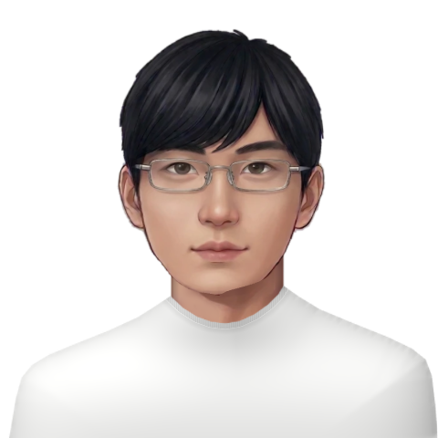

Tuan M. Truong
PhD Student · School of Computing, National University of Singapore
Hi! I'm Tuan, you can call me Tuna 🐟. I am a PhD student at the National University of Singapore (NUS), supervised by Professor Shuicheng Yan.
Research Interests
I am interested in recursive self-improvement (RSI) and self-evolving agents.
Email · Google Scholar · CV

“In the depth of winter, I finally learned that within me there lay an invincible summer.” Albert Camus
Publications
(*) denotes equal contribution.
Experience
-
National University of SingaporeAug 2026 – PresentPhD Student, School of Computing · Advisor: Prof. Shuicheng Yan
-
Center for AI Research, VinUniversityDec 2025 – Jun 2026AI Research Resident · Hanoi, Vietnam · Supervisor: Duy Nguyen (PhD Candidate, Max Planck Research School for Intelligent Systems & DFKI)Data-efficient vision-language-action (VLA) models for robot manipulation.
-
VinAI Research (now Qualcomm AI Research)Feb 2023 – Jul 2025Research Resident · Supervisors: Prof. Trung Le (Monash), Prof. Nhat Ho (UT Austin)Robust and data-efficient PEFT techniques for large foundation models — four papers at ICML 2025 (3) and NeurIPS 2024 (1).
-
University of British ColumbiaApr 2022 – Apr 2023Research Assistant with Prof. Kevin Leyton-Brown; TA for CPSC 340 (Machine Learning & Data Mining)Boolean satisfiability solvers via reinforcement learning — co-authored "UNSAT Solver Synthesis via Monte Carlo Forest Search" (CPAIOR 2024).
-
FPT Software AI CenterMay 2021 – Mar 2022Research Resident · Supervisor: Prof. Hung Tran-TheContextual bandits and offline RL — co-authored "Expected Improvement for Contextual Bandits" (NeurIPS 2022).
Education
-
National University of SingaporeAug 2026 – PresentPhD, School of Computing · Advisor: Prof. Shuicheng Yan
-
University of British ColumbiaSept 2020 – May 2024BSc, Combined Honours in Mathematics and Computer Science · GPA 87.32% (A)
Honors & Awards
- Bronze Medal, 59th International Mathematical Olympiad (IMO) 2018
- Second Prize, Vietnamese Mathematical Olympiad (VMO) 2018
- Third Prize, Vietnamese Mathematical Olympiad (VMO) 2017
- UBC Trek Excellence Scholarship for Continuing Students 2023
- UBC Computer Science Scholarship 2023
- UBC Faculty of Science International Student Scholarship 2022, 2023
- First Runner-up, DENSO Factory Hacks Hackathon Challenge 2023
Professional Services
Reviewer: ICML (2024–2026), ICLR (2024–2026), CVPR (2024–2025), NeurIPS (2026).